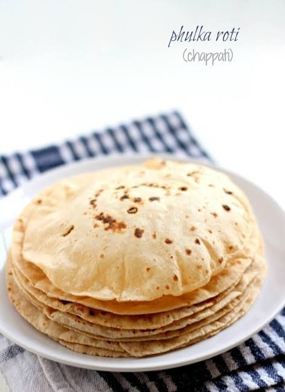

Roti is a classic Indian dish made by layering flour sheets with rich meat or vegetable sauce, creamy béchamel sauce, and cheese. The layers are baked until golden and bubbly, creating a hearty and flavorful meal.